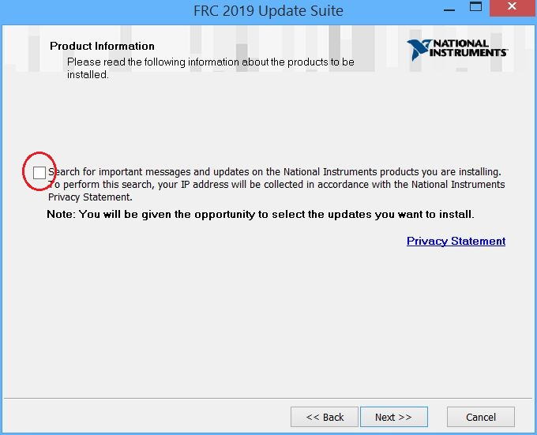
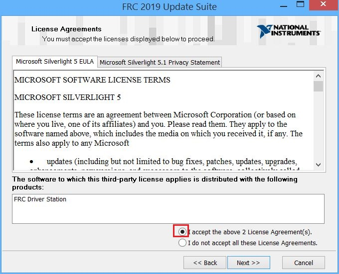
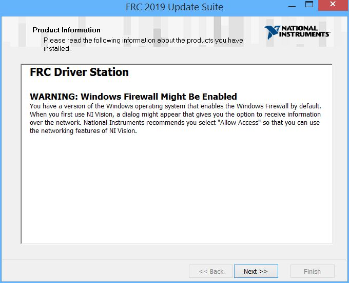
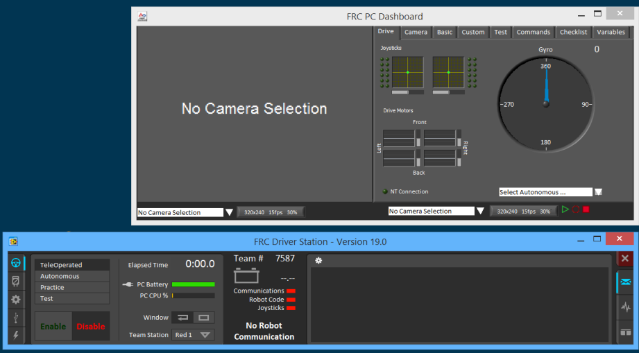
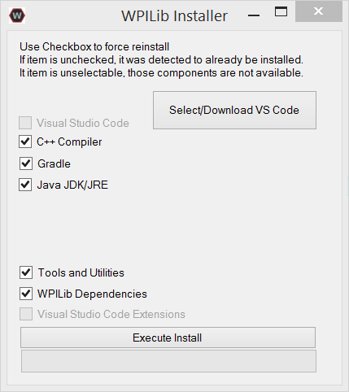
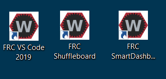
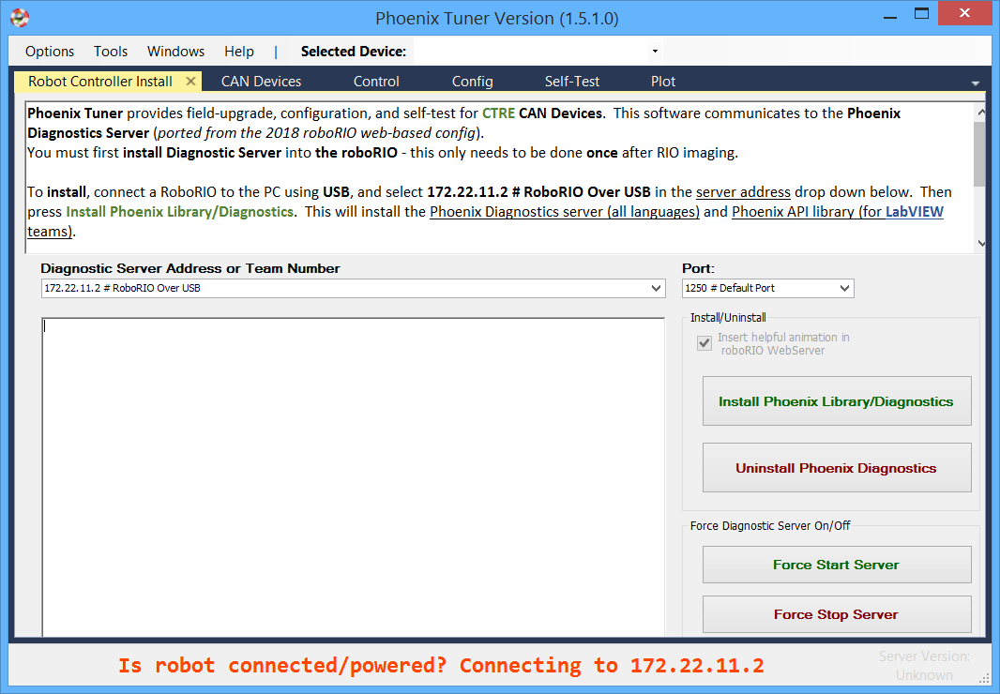

Environment Setup
A set of software components must be installed on the laptop, which is to be the Driver Station of your robot. Make sure you have a stable and decent Internet connection.
FRC Update Suite by NI (National Instruments)
National Instruments provides the Driver Station and tools for imaging the roboRIO. Installation is straighforward but you'll need to log onto
- Go to http://www.ni.com/download/first-robotics-software-2017/7904/en/, and click the link FRCUpdateSuite_2019.2.0.zip.
- You'll be prompted to log in, create an account if needed.
- After downloaded, unzip the zip file to a local folder, go into the folder and double-click setup.exe to start installation.
On most of the installation wizard screens you click "Next" to move along. Pay attention to a few screens below:

Enter Team7587's license activation code B04P65237 on this window:

Ensure to accept 2 license agreements:


Note the warning on Windows firewall, and make sure you pick "Allow Access" whenever prompted:

IMPORTANT: Make sure you tick the checkbox to run license manager at the end of installation:

When license manager starts, if you already logged in on the ni.com site, it's most likely that the serial number you entered above is already populated; if not, just enter it again, then click the 'Activate' button:

After activating the license, restart the laptop as prompted. After reboot, you should see below three tools on your desktop:
- Driver Station
- FRC Dashboard
- roboRIO Imaging Tool

Driver Station
The Driver Station (DS) is a critical part of your robot software. It is the user interface on your laptop that enables you to communicate with the robot, and drive it. Now you should launch the DS and inspect its various components.
By default, DS launches itself plus the default Dashboard:

Read the article FRC Driver Station as you move along.
Tip: Connect your joystick and game pad to the laptop and see if DS detects them.
FRC Development Tools by WPI
In 2019 WPI deprecated Eclipse and started pushing Visual Studio Code (a light-weight development tool by Microsoft) as the new standard IDE.
Note: The WPI package installer contains a specific JDK version (v11), do not use any JDK outside of the installed package.
- Go to https://github.com/wpilibsuite/allwpilib/releases and download the latest version; at this point it's either WPILibInstaller_Windows64-2019.4.1.zip (for 64-bit Windows) or WPILibInstaller_Windows32-2019.4.1.zip (for 32-bit Windows). The file is over 1 GB, it will take some time.
Note: To determine your Windows version, go to Control Panel and open System, look for "System type" field.
-
Extract the .exe file in the zip and double-click it to start the installation.
-
The installer will initially have the two checkboxes "Visual Studio Code" and "Visual Studio Code Extensions" disabled (see below). You need to click "Select/Download VS Code" to download it first. The downloaded file is OfflineVsCodeFiles-1.3x.1.zip and will be placed in the same folder as the installer. Leave it there and don't open it.

- Back on WPILib Installer, check the two "Visual Studio Code..." checkboxes, and click "Execute Install" to start the full installation. After a while you'll get a prompt confirming the installation is completed, and see below three icons placed on the desktop.


- Double-click the icon "FRC VS Code 2019" to launch the IDE, type Ctrl+Shift+P. A command pallet shows up on the top, type in "WPILIb" and you should see a list of WPILib commands show up.

Note: The installer places all the files in the folder C:\Users\Public\frc2019, this way all users on the laptop can access them.
3. Phoenix Framework by CTRE (Cross The Road Electronics)
In order to use the Talon SRX motor controller, the Phoenix Software Package from its manufacturer CTRE is required. Installation is straightforward: 1. Visit http://www.ctr-electronics.com/hro.html#product_tabs_technical_resources 2. Click the link CTRE Phoenix Framework Installer 5.15.0.1 (.zip) to download the zip package 3. The zip file contains a single file with same name but .exe extension, extract it out to local folder 4. Double-click it to start the installation (it will require admin rights) 5. If you see below alert window, click 'Install' to continue:

After installation completes, the Phoenix Tuner icon shows up on your desktop:

Launch the tuner and it would look like this:

More information on Phoenix Software can be found here.
Now that your environment is up, let's move on to take a closer look at the basics of robot programming.